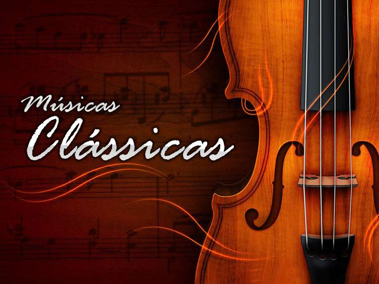

-
Curta o melhor da Música Clássica
-
Música de concerto, chamada popularmente de música clássica ou música erudita, é a principal variedade de música produzida ou enraizada nas tradições da música secular e litúrgica ocidental.